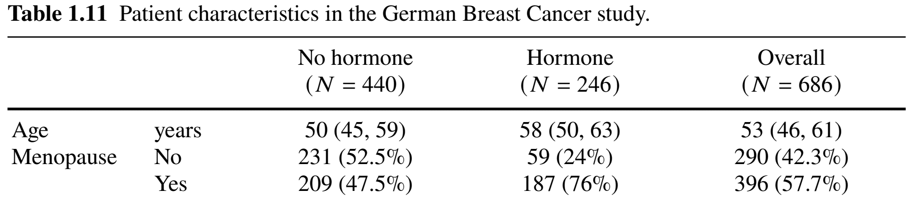
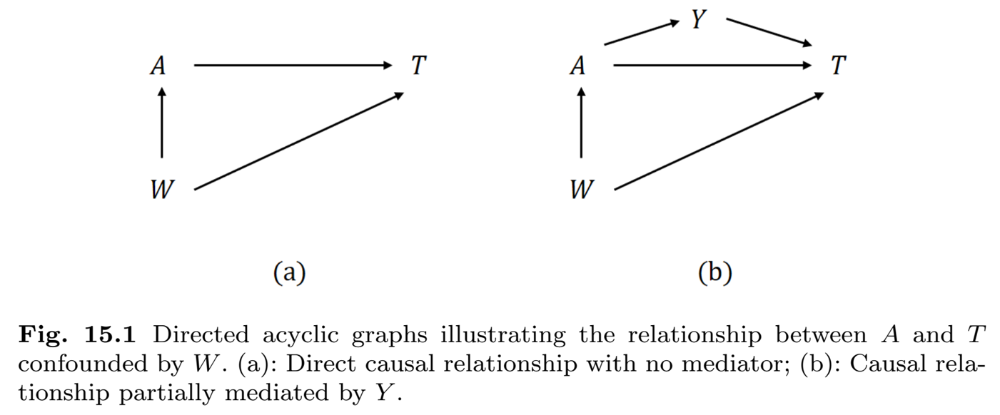
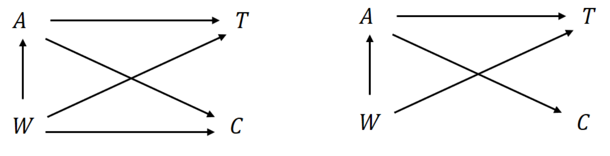
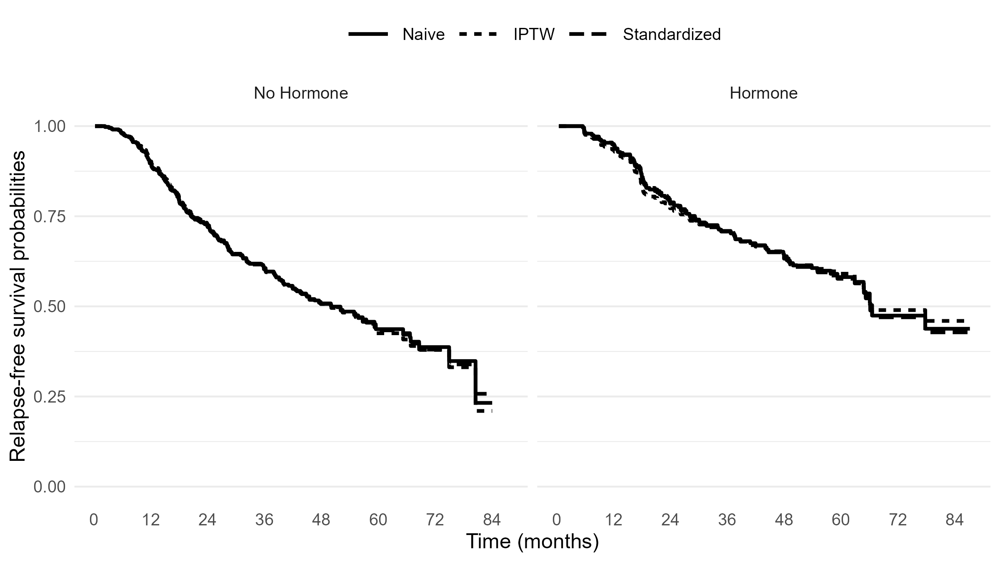
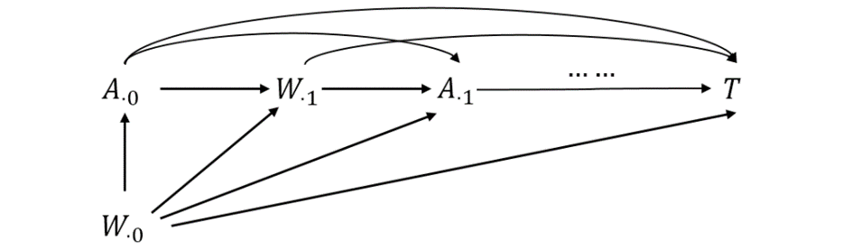
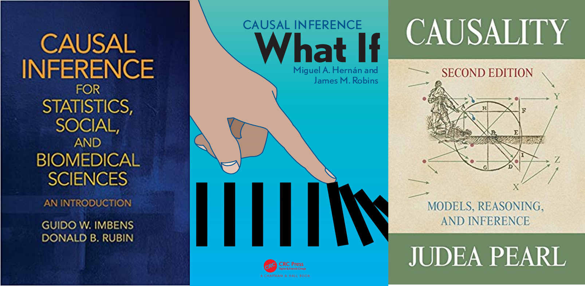

Chapter 14 - Causal Inference in Survival Analysis
Department of Biostatistics & Medical Informatics
University of Wisconsin-Madison
The counterfactual framework
Inverse weighting and standardization
Estimating causal survival curves
Marginal structural models with time-varying treatment/confounding
\[\newcommand{\d}{{\rm d}}\] \[\newcommand{\T}{{\rm T}}\] \[\newcommand{\dd}{{\rm d}}\] \[\newcommand{\cc}{{\rm c}}\] \[\newcommand{\pr}{{\rm pr}}\] \[\newcommand{\var}{{\rm var}}\] \[\newcommand{\se}{{\rm se}}\] \[\newcommand{\indep}{\perp \!\!\! \perp}\] \[\newcommand{\Pn}{n^{-1}\sum_{i=1}^n}\] \[ \newcommand\mymathop[1]{\mathop{\operatorname{#1}}} \] \[ \newcommand{\Ut}{{n \choose 2}^{-1}\sum_{i<j}\sum} \def\a{{(a)}} \def\b{{(1-a)}} \def\t{{(1)}} \def\c{{(0)}} \def\d{{\rm d}} \def\T{{\rm T}} \]
Patients randomly assigned to hormonal vs non-hormonal treatments
Two groups identical (exchangeable) in terms of baseline characteristic
Any between-group difference in relapse-free survival attributable to treatment (no confounding)
\[ \hat\pr(T>t\mid A=1)-\hat\pr(T>t\mid A=0) \]
Hormone non-randomized 


ipw::ipwpoint()A: A; confounders: Wfamily = "binomial", link="logit": logistic regression for binary \(A\)Causal hazard ratio: 69.5% (\(p\)-value 0.006)
Standard error may be incorrect due to randomness in estimated weights
# estimate propensity score
tmp <- ipwpoint(exposure = A, family="binomial",link="logit",
denominator =~ meno + size + factor(grade) + nodes + prog
+ estrg, data=data.CE)
# IPTW-adjusted KM
obj <- survfit(Surv(time, status) ~ A, weights = tmp$ipw.weights,
data = data.CE)
# IPTW Cox model (essentially a marginal structural Cox model)
coxph(Surv(time,status) ~ A, weights=tmp$ipw.weights, data=data.CE)
#> coef exp(coef) se(coef) robust se z p
#> A -0.36947 0.69110 0.08318 0.13632 -2.71 0.00672
General assumption: \(T\indep C\mid (A, W)\)
Weight construction

ipw::ipwtm() (I)head(haartdat)
# patient tstart fuptime haartind event sex age cd4 endtime dropout
# 1 -100 0 0 0 1 22 23.83275 2900 0
# 1 0 100 0 0 1 22 25.59297 2900 0
# 1 100 200 0 0 1 22 23.47339 2900 0
# 1 200 300 0 0 1 22 24.16609 2900 0
# 1 300 400 0 0 1 22 23.23790 2900 0
# 1 400 500 0 0 1 22 24.85961 2900 0
# ...ipw::ipwtm() (II)trt: treatment indicator; V: baseline covariates \(V\); W: (time-varying) confounders; (tstart, timevar): start/stop times; id: subject identifier# treatment changes only once, from 0 to 1,
# e.g., initiation of ART
iptw <- ipwtm(exposure = trt, family = "survival",
numerator =~ V, denominator =~ W, id,
tstart, timevar, type = "first")
# treatment binary and changes arbitrarily
iptw <- ipwtm(exposure = trt, family = "binomial",
link="logit", numerator =~ V, denominator =~ W,
id, type = "all")ipw::ipwtm() (III)iptw$ipw.weights: \[
\prod_{t_j\leq t}\frac{\pi_{A_{\cdot, j}}(t_j; \overline A_{\cdot, j-1}, V)}
{\pi_{A_{\cdot, j}}(t_j; \overline A_{\cdot, j-1}, \overline W_{\cdot j})}
\]censor = 1: censored, 0: not censoredipw::ipwtm() (III)ipcw$ipw.weights: \[
\prod_{t_j\leq t}\frac{\lambda_C(t_j\mid \overline A_{\cdot, j-1}, V)}
{\lambda_C(t_j\mid \overline A_{\cdot, j-1}, \overline W_{\cdot j})}
\]haartind; \(V=\) sex, age; \(W=\) sex, age, cd4# Compute the IPTW weights
iptw <- ipwtm(exposure = haartind, family = "survival",
numerator = ~ sex + age, denominator = ~ cd4 + sex +
age, id = patient, tstart = tstart, timevar = fuptime,
type = "first", data = haartdat)
# Compute the IPCW weights
ipcw <- ipwtm(exposure = dropout, family = "survival",
numerator = ~ sex + age, denominator = ~ cd4 + sex +
age, id = patient, tstart = tstart, timevar = fuptime,
type = "first", data = haartdat)
# Fit IPTW/IPCW marginal structural Cox model
obj <- coxph(Surv(tstart, fuptime, event) ~ haartind + sex +
age + cluster(patient), data = haartdat,
weights = iptw$ipw.weights * ipcw$ipw.weights)Exercise
What happens if you adjust for CD4 cell count as a time-varying covariate?

ipw R-package)ipw::ipwtm() and fed into survival::coxph()